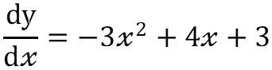
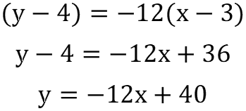

Is defined as the rate at which y changes as x changes. For example, if = n, then the rate of change is n times greater than the rate of change of x. Thus, if the rate of change in x is m then the rate of change of y will be m × n.
Is defined as the rate at which y changes as x changes. For example, if = n, then the rate of change is n times greater than the rate of change of x. Thus, if the rate of change in x is m then the rate of change of y will be m × n.| Standard Results |
|---|
Where C is a constant in 1 and 2. In 3 note how differentiation for a function f(x) can be written as f'(x).
The above table shows the results of differentiation being applied to different to equations (row 1), values (row 2) and functions (row 3).
Is defined as the rate at which y changes as x changes. For example, if = n, then the rate of change is n times greater than the rate of change of x. Thus, if the rate of change in x is m then the rate of change of y will be m × n.
Differentiation can also be used to find the tangent and normal of a curve at a particular point.
The following example will find the tangent and normal of the curve above at the point (3, 4).
Here the equation of the curve has been differentiated the next step is to substitute the value of x to obtain the gradient of the tanget at the point (x, y).

Here the value of x (which is 3) has been substituted to obtain the gradient of the line at the point (3, 4) which is -12.
Using the equation (y - y₁) = m(x - x₁) and subsituting the gradient, coordinates of the point and then re-arrenging provides the equation of the tangent.
The normal of a curve at a point is perpendicular to the line the tangent. The gradient of a line that is perpendicular to obtained by calculating the reciprocal (which is shown above as -1 over the gradient) of the known gradient. In this case the known gradient is that of the tangent which is -12.
Now we have the normal the normal of the curve at the point (3, 4).
A stationary point is a point on a curve where the value of is equal to 0. There are 3 different types of stationary point.
The second derivative is obtained by differentiating , the second derivative is written as . When being applied to a function it can be written as f''(x).
The second derivative can be used to tell if a stationary point is a turning, local maxima or local minima point.
A function is increasing if > 0. However, it is decreasing if < 0.
| Standard Results |
|---|
The process of Integration is opposite to differentiation. It can be used to find the constant c, which is where the curve passes through the y axes when x = 0.
One application of integration is that it can be used to find the arena under a curve.
| Definite Integral Notation |
|---|
 |
| Where a and b are two values of x and y is a function of x. |